Voir exemple : Les Bassins Versants
Les bassins versants peuvent être distingués en deux types :
Les bassins versants « urbains » : ils présentent une imperméabilisation supérieure à 20 %, qui conditionne exclusivement le volume de la lame d'eau ruisselée.
Les bassins versants « ruraux » présentent une imperméabilisation inférieure à 20 %. Le volume ruisselé dépend de nombreux facteurs variables dans le temps, tels que le couvert végétal, l'antécédent pluviométrique, les pratiques culturales, etc.
Sur un BV URBAIN, plusieurs débits peuvent être caractérisés :
Le débit d'orage (QORA) correspond au débit de l'orage de fréquence de dépassement retenue pour le dimensionnement des collecteurs (en règle générale on choisit une période de retour de 10 ans).
Le débit de référence (QREF) peut être caractérisé comme le débit limite de non-déversement des systèmes unitaires. Il est composé du débit de temps sec et d'une part de débit d'eaux pluviales définies comme le débit de pluie de référence.
Le débit temps sec (QTS) constitué par le débit des rejets d'eaux usées et le débit permanent d'eaux claires parasites (source, drains, infiltration, …).
Sur un BV RURAL, seul le débit d'orage (QORA) est caractérisé.
D'un point de vue hydrologique, un bassin versant se caractérise par sa réaction face à une sollicitation (des précipitations). Cette réaction, mesurée à l'exutoire du système par l'observation de la quantité d'eau qui s'écoule, permet d'établir un hydrogramme (représentation du débit Q en fonction du temps).
Les caractéristiques d'un bassin versant influencent fortement sa réponse hydrologique, et notamment le régime des écoulements en période de crue ou d'étiage.
La capacité d'un bassin versant à ruisseler est caractérisée par le coefficient de ruissellement qui est très souvent utilisé en hydrologie de surface. Son calcul et son emploi sont simples, mais notons qu'il peut conduire à commettre de grossières erreurs. Ce coefficient est défini comme étant le rapport du volume d'eau ruisselé sur le volume d'eau total précipité sur le BV.
En l'absence de mesure (cas le plus fréquent) sur les bassins de type Urbain, on utilise, en assainissement urbain, le rapport des surfaces imperméables raccordées au réseau à la surface totale du bassin versant.
Cette évaluation sous-entend que les pertes initiales, dues essentiellement au stockage de l'eau dans les dépressions (0,1 à 2 mm) et les effets des surfaces perméables en liaison avec le réseau sont négligeables, ceci n'étant plus le cas général du fait du développement des techniques alternatives (chaussées réservoir, noues, …).
Pour les bassins non urbains, ce coefficient est plus difficile à estimer et subit de fortes variabilités dans le temps. Les pertes initiales, la potentialité d'infiltration conditionnent la réponse volumétrique du BV.
La réaction hydrologique d'un bassin versant est caractérisée par un hydrogramme mesuré à son exutoire représentant la variation des débits en fonction du temps. La grandeur et la forme de l'hydrogramme de crue résultant d'une pluie donnée sont fonction de la vitesse et de l'intensité de la réaction caractérisée notamment par le temps de concentration Tc.
Le temps de concentration des eaux sur un bassin versant se définit comme le temps mis par une goutte d'eau tombée sur le point le plus éloigné (hydrologiquement) de l'exutoire pour y parvenir.
Cette valeur est influencée par diverses caractéristiques morphologiques dont principalement :
la taille (surface),
la forme (surface et longueur),
et le relief du bassin (longueur et pente).
A ces facteurs s'ajoutent encore le type de sol, le couvert végétal et les caractéristiques du réseau hydrographique.
Elle peut être réalisée par des formules empiriques ou par la méthode dite "des vitesses" utilisée couramment pour les projets d'assainissement routier.
Données
|
Tc |
Temps de concentration, |
|
A |
Superficie du bassin versant, |
|
P |
Pente du bassin versant, |
|
L |
Longueur du bassin versant, |
|
V |
Vitesse d'écoulement. |
Formules empiriques : Tc est exprimé en mn
|
NOM |
Kirpich |
Passini |
Ventura |
|
Formulation |
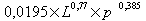 |
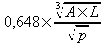 |
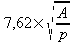 |
|
Unités |
L : longueur en m, p : pente en m/m, A : surface en km2 | ||
|
Validité |
A > 40 km2 |
A > 10 km2 Pente faible ou moyenne | |
Tableau 2.1. Tableau des formules empiriques des temps de concentration
Méthode des vitesses
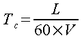 avec Tc en mn, L en m, V en m/s
Tableau des vitesses
L'application des techniques statistiques aux données des relevés pluviométriques permet de déterminer la fréquence et les caractéristiques des événements pluvieux.
Si au cours d'une période d'observation de N années, il a été enregistré n averses d'intensité supérieure ou égale à i sur un intervalle de temps dt, la fréquence de dépassement F de cette averse est définie par le rapport n/N. La période de retour T est l'inverse de la fréquence de dépassement; elle représente le nombre d'années au cours duquel l'averse surviendra, en moyenne, seulement une fois.
Des dépouillements complets des relevés pour divers intervalles de temps Dt permettent d 'établir des familles de courbes donnant, pour une période de retour donnée, l 'intensité moyenne sur l 'intervalle de référence Dt.
Diverses formules mathématiques permettent une représentation de ces familles de courbes. Une des plus répandues est la formule de Montana :
|
t |
durée de l'averse en mn |
|
a(T), b(T) |
coefficients fonction de la pluviométrie |
|
i |
intensité de la pluie en mm/mn |
Ces analyses statistiques conduisent à des familles de paramètres variables d'une part suivant la période de retour, mais d'autre part également suivant la durée des événement pluvieux. Il peuvent en outre présenter des ordres de grandeur différents (notamment pour a) selon les unités utilisées.
Il est important de retenir pour le calcul la famille de paramètres adaptée, faute de quoi des dérives importantes peuvent être relevées au niveau des 2,résultats.
![[Astuce]](chmicons/tip.png) | Astuce |
|---|---|
La définition des paramètres a et b de la loi de Montana est réalisée à l'aide de l'onglet « Paramètres ». |
Les courbes IDF sont également employées pour construire des « pluies de projet ».
Une « pluie de projet » est une pluie fictive définie par un hyétogramme synthétique et statistiquement représentative des pluies réelles, bien que jamais observée.
Le modèle de pluie de projet couramment utilisé a été mis au point par Mr DESBORDES (Laboratoire d'Hydrologie Mathématique de Montpellier) suite à une analyse des deux longues séries d'observations disponibles en France (Montpellier Bel-Air et Paris Montsouris).
La pluie de projet "Desbordes" est caractérisée par :
une durée totale de la pluie DP de l'ordre de 4 heures
une durée intense DM qui varie de 15 minutes à une heure selon la nature des bassins versants
la position de cette période intense
les hauteurs HT précipitée sur la durée totale et HM précipitée au cours de la période intense. Cette dernière a la période de retour T choisie pour la pluie.
une forme doublement triangulaire.
Cette représentation d'un événement pluvieux est utilisé pour le calcul par la méthode de l'hydrogramme (cf. « chapitre »« 2.2.4.1.3 »« - »« Méthode de l'hydrogramme » ).
Dans le cadre des études d'hydrologie urbaine, la valeur prépondérante à estimer reste le débit maximal de l'hydrogramme de ruissellement correspondant à une occurrence d'apparition donnée (1, 2, 5, 10, […], 100 ans).
Plusieurs méthodes sont disponibles : la plus ancienne est la Méthode Rationnelle qui utilise un modèle simple de transformation de la pluie (décrite par son intensité iT), supposée uniforme et constante dans le temps, en un débit instantané maximal à l'exutoire. Celui-ci est atteint lorsque l'ensemble du bassin contribue à la formation du débit, donc lorsque la durée de l'averse est égale au temps de concentration du bassin versant.
|
QpluieORA |
débit de pluie d'orage par la méthode rationnelle (m3/s) |
|
Cr |
coefficient de ruissellement |
|
iT |
intensité de la pluie de période de retour T (mm/mn) |
|
A |
surface du bassin versant (ha) |
C'est une méthode dérivée de la formule rationnelle qui s'applique exclusivement sur des surfaces urbaines drainées. Elle permet de déterminer directement le débit de pointe à partir des caractéristiques du bassin versant et de l'averse. Sa formulation est la suivante :
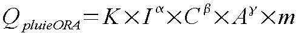
|
QpluieORA |
débit de pluie d'orage par la méthode de Caquot en m3/s |
|
I |
pente hydraulique en m/m |
|
C |
coefficient d'imperméabilisation |
|
A |
surface du bassin versant (ha) |
|
m |
coefficient correctif de forme |
|
K, α, β, γ |
coefficients dépendant de la pluviométrie et de la période de retour |
La méthode consiste à calculer l'hydrogramme de ruissellement à partir d'une pluie de projet synthétique du type « double triangle ». Les principes de construction de la pluie de projet initiale sont les suivants :
La durée de la période intense est prise égale au temps de concentration calculé avec la formule de Kirpich.
La durée totale est prise égale à 4 fois la durée intense.
Les hauteurs précipitées sur ces deux durées sont évaluées par application de la loi de Montana.
Cette procédure conduit à affecter le même temps de retour sur les deux périodes caractéristiques de la pluie (durée de la période intense et durée totale). Cette démarche ne reflète pas la réalité et il conviendrait de retenir une période de retour plus faible pour le calcul de la hauteur d'eau précipitée durant la totalité de la pluie.
L'utilisateur a la possibilité de modifier à souhait les différentes variables de la pluie de projet ; il peut ainsi définir des hauteurs différentes de celles calculées par l'application de la loi de Montana. En exécutant un double clic dans les champs de saisies des hauteurs, la valeur est recalculée par la loi de Montana.
Pour les bassins versants de type urbain, le modèle de perte est un modèle de pertes proportionnelles au coefficient d'imperméabilisation (seule la lame d'eau précipitée sur les surfaces imperméables participe au ruissellement).
La transformation pluie-débit est effectuée par application du modèle du réservoir linéaire simple.
Pour les bassins versants de type non urbain, le modèle de pertes tient compte :
de pertes initiales liées au phénomène de rétention de surface, d'évaporation, d'interception par la végétation,
de pertes continues liées au phénomène d'infiltration et reconstituées par le modèle de Horton.
La transformation pluie-débit est effectuée par application d'un modèle à deux réservoirs linéaires enchaînés en série.
Elles sont constituées par l'interception de la pluie par la végétation et par le stockage de l'eau dans les dépressions de la surface réceptrice. Il semble que l'interception ne puisse influencer de façon tangible les pertes initiales que si la couverture végétale est importante.
La quantité retenue dépend de la position de la surface réceptrice, de sa forme et donc de l'espèce (et de la saison), de l'intensité de la pluie, et de l'impact des gouttes d'eau.
Quantitativement, on peut estimer que les pertes par interception sont de l'ordre de 10 à 20% de la pluie durant la saison de croissance des plantes. La capacité de stockage quant à elle, varierait de 0,5 à 1,5 mm pour les arbres et de 0,25 à 1 mm pour une végétation herbacée à maturité.
L'eau de ruissellement se piège dans les dépressions superficielles au début de l'averse. La quantité d'eau qui peut être piégée peut être localement importante. La nature du sol et de son couvert végétal, son utilisation, et sa pente sont les principaux facteurs qui influencent ce phénomène. Les dépressions sont remplies au début de l'averse et comme l'interception, retardent le ruissellement. Quantitativement, les valeurs du stockage retenues dans la littérature varient de :
5 mm pour les terrains sablonneux,
3,5 mm pour les terrains glaiseux,
2,5 mm pour les terrains argileux,
à une valeur maximale de 16 mm. Une valeur moyenne pour les surfaces perméables semble être de l'ordre de 6 à 7 mm.
|
Pelouse pentue | |
|
interception |
1.0 |
|
stockage |
0.5 |
|
rétention sol |
4.0 |
|
TOTAL |
5.5 mm |
|
Forêt sur plat | |
|
interception |
5.0 |
|
stockage |
1.5 |
|
rétention sol |
10.0 |
|
TOTAL |
16.5 mm |
Tableau 2.2. Exemples de pertes initiales
A titre de comparaison, pour les surfaces imperméables, les capacités retenues dans les dépressions superficielles sont beaucoup plus faibles (de 1 à 3 mm), et sont généralement négligées.
Les pertes continues évoluent tout au long de l'averse et sont constituées par l'infiltration et l'évaporation. Le phénomène d'infiltration se produisant sur les surfaces perméables peut absorber des quantités très importantes d'eau. Pour un état de saturation du sol donné, au début de l'averse, l'eau s'infiltre rapidement remplissant les vides capillaires du sol au voisinage de la surface. Au fur et à mesure que les cavités capillaires du sol en surface sont remplies, la capacité d'infiltration du sol, liée à la demande en eau, diminue et la vitesse d'infiltration décroît jusqu'à ce que la zone d'aération du sol soit saturée. La vitesse d'infiltration atteint au bout d'un certain temps une vitesse constante minimale et il s'établit un régime permanent.
Les facteurs qui influencent l'infiltration sont nombreux et leurs actions sont souvent intimement liées. Quatre éléments principaux gouvernent ce processus :
le sol qui intervient par sa structure granulométrique, sa composition, son mode d'utilisation,
l'eau intervient par sa teneur initiale dans le sol au début de l'averse, sa hauteur au-dessus du sol,
le couvert végétal intervient au niveau des racines (cheminement préférentiel), par le retard à l'écoulement qu'il crée, par la protection qu'il assure au sol contre l'impact des gouttes de pluies,
la saison qui intervient par la fréquence des pluies qui gouvernent l'humidité initiale du sol et par la température qui régit l'évaporation et l'évapotranspiration.
Les pertes par infiltration sont fréquemment représentées par la loi de Horton, qui a donné une expression de la capacité d'infiltration (ou infiltration potentielle) en fonction du temps de la forme :
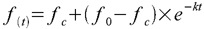
|
fc |
vitesse limite d'infiltration en mm/h |
|
f0 |
vitesse initiale d'infiltration au temps 0 en mm/h |
|
k |
coefficient dépendant du complexe solvégétation |
On peut aussi exprimer cette formule sous la forme :
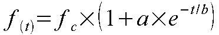
avec :
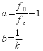
Le choix des paramètres constitue une difficulté majeure, ils sont dépendant de nombreux autres facteurs eux-mêmes variables (teneur en eau du sol, couverture végétale,…).
Par ailleurs, il convient de noter que cette modélisation de l'infiltration devient totalement aléatoire lors de situations particulières (formation d'une croûte de battance, violent orage sur sol très sec, nappe sub-affleurante).
fc caractérise la perméabilité du sol qui compose le bassin versant. On a par exemple relevé pour des terrains nus :
Terre sableuse : fc = 15 à 25 mm/h,
Terre lourde : fc = 3 à 5 mm/h,
Terre argileuse : fc = 1 à 3 mm/h.
Si fc est une caractéristique du bassin, f0 est variable et dépend de l'état de saturation du sol au début de l'averse, et donc des conditions pluviométriques antérieures. Elle sera moindre si le sol est déjà humide.
On a observé des valeurs de f0 comprises entre 20 et 100 mm/h pour des sols secs. L'estimation de f0 doit tenir compte du fait que :
Si la vitesse d'infiltration fc augmente :
si la rétention de surface augmente alors f0 augmente,
le taux de saturation augmente.
k représente la rapidité d'évolution de la courbe d'infiltration entre les valeurs f0 et fc. Ce coefficient est d'autant plus grand que la surface du sol est plus favorable à l'infiltration (rétention de surface importante, terrain meuble, …).
Un élément d'appréciation important est la durée Ts au bout de laquelle un sol atteint la saturation dans des conditions moyenne d'humidité initiale, sous de fortes averses continues. Cette durée est de 12 à 24 heures dans les régions à forte pluviométrie comme le sud de la France. Elle peut atteindre 2 à 3 jours dans d'autres régions et pour certains sols très perméables.
Le modèle de ruissellement est un modèle de stockage élémentaire appelé « modèle du réservoir linéaire » applicable à un bassin versant équipé d'un système de drainage artificiel (caniveaux, canaux, égouts, ...).
Ce modèle conceptuel est représenté par le schéma simple ci-après :
Le fonctionnement du système transformateur est représenté par deux lois reliant deux variables de flux (I(t) intensité de la pluie nette, et Q(t) débit à l'exutoire) et une variable d'état caractéristique du système S(t) correspondant au volume stocké au temps t. La relation entre ces trois variables est linéaire.
|
Une équation de stockage |
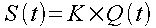 |
|
Une équation de conservation |
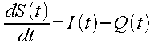 |
|
S(t) |
volume stocké à l'instant t sur le bassin et dans le réseau en mm |
|
Q(t) |
débit à l'exutoire du bassin à l'instant t en mm |
|
I(t) |
intensité de la pluie nette tombant à l'instant t sur le bassin en mm |
|
K |
paramètre caractéristique du bassin versant en mn(cf. suite) |
L'équation de conservation traduit, à chaque instant, la variation du stockage qui est égale à la différence entre flux entrant et sortant.
Le paramètre K de l'équation de stockage est homogène à un temps. Il traduit le décalage dans le temps des centres de gravité de la pluie (hyétogramme) et du débit (hydrogramme), c'est en quelque sorte le temps de réponse.
Sur les bassins urbanisés, les différentes recherches ont permis d'établir une formulation du paramètre K en fonction d'une part des caractéristiques du bassin versant et d'autre part de la pluie abattue.
L'analyse multivariable conduite sur des bassins versants expérimentaux français et américains a permis de donner à K l'expression suivante :
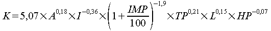
|
K |
paramètre (en mn) |
|
A |
surface (en ha) |
|
I |
pente hydraulique (en %) |
|
IMP |
imperméabilisation (en %) |
|
TP |
durée de la période intense de la pluie nette (en mn) |
|
L |
longueur hydraulique (en m) |
|
HP |
hauteur tombée durant TP (en mm) |
Le domaine de validité de cette relation est
|
Paramètres |
Borne inférieure |
Borne supérieure |
|
A |
0.4 |
5 000 ha |
|
IMP |
20 % |
100 % |
|
L |
110 m |
17 800 m |
|
I |
0.4 % |
4.7 % |
|
TP |
5 mn |
180 mn |
|
HP |
5 mm |
240 mm |
Les essais de calage du modèle sur la valeur du débit de pointe ont montré que pour reproduire cette valeur avec une meilleure précision, il convenait de réduire la valeur de K à :
|
Bassins de surface < 6 ha |
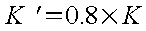 |
|
Bassins de surface < 250 ha |
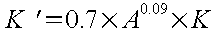 |
Dans « La ville et son assainissement » figurent également les formulations suivantes :
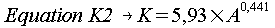
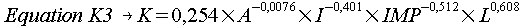
Pour les bassins periurbains, il peut être retenu :
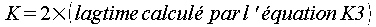
Pour les bassins non urbains, aucune étude n'a permis de lier ce paramètre aux caractéristiques du bassin. La seule méthode crédible reste donc le calage.
Les écoulements de temps sec se composent des écoulements d'eaux usées (domestiques, artisanales et industrielles) et des écoulements d'eaux claires parasites.
Les débits d'eaux usées sont estimés en général d'après les consommations moyennes par habitant pour les eaux d'origines domestiques ou par activité pour les effluents industriels.
Les volumes rejetés sont déterminés à partir du rejet d'eau par habitant et par jour correspondant aux plus fortes consommations journalières de l'année (entre 100 et 200 l/hab./jour).
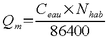
|
Qm |
débit journalier en l/s |
|
Ceau |
rejet journalier par habitant en litre/jour/habitant |
|
Nhab |
nombre d'équivalents-habitant |
Les débits de pointe seront calculés à partir du débit moyen par application d'un coefficient de pointe p estimé par cette formule :
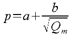
|
p |
coefficient de pointe |
|
a |
paramètre qui exprime la limite inférieure (par défaut 1,5) |
|
b |
paramètre qui exprime la valeur de croissance (par défaut 2,5) |
|
Qm |
débit moyen journalier des eaux usées en l/s |
Si des zones comportent des établissements ayant des activités particulières (hôpital, cantine, école, caserne, ...), le projeteur pourra se référer au tableau fourni ci-après, où figurent des valeurs moyennes de consommation journalière et de facteurs de pointe d'établissements courants.
On peut ainsi obtenir le débit des eaux domestiques de pointe Qedp avec la formule suivante :
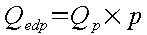
Les débits des eaux usées industrielles peuvent cependant être estimés par une équivalence en nombre d'habitants et ainsi calculés selon les principes décrits précédemment pour finalement obtenir le débit de pointe des eaux industrielles Qeip.
La quantification des eaux claires parasites est intégrée par la définition, sur le bassin versant, d'un taux de dilution des eaux usées.
Ce taux représente, en pourcentage par rapport au débit moyen journalier des eaux usées, la quantité d'eaux claires parasites drainées sur le bassin versant.
L'estimation du débit moyen des eaux parasites à l'exutoire du bassin élémentaire résulte donc simplement du produit du débit moyen des eaux usées par le taux de dilution.
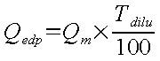
|
Qedp |
Débit des eaux claires parasites en l/s |
|
Qm |
Débit moyen des eaux usées en l/s |
|
Tdilu |
Taux de dilution en % |
Le débit de référence est composé du débit de temps sec QTS et d'un débit d'eau pluviale de référence, estimé à partir d'une intensité moyenne de pluie caractérisée par le projeteur.
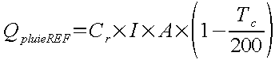
|
Cr |
le coefficient de ruissellement |
|
A |
la surface du bassin versant (en ha) |
|
Tc |
le temps de concentration (en mn) |
|
I |
l'intensité moyenne de la pluie de référence (en l/ha/s) |
Le débit de pluie de référence est considéré comme le débit correspondant aux pluies faibles qui devront être entièrement traitées en station. Il résulte d'un compromis entre les aspects techniques, économiques et environnementaux.
On en déduit alors le débit de référence :
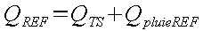
Cette valeur est plus spécifiquement utilisée pour le dimensionnement des systèmes de déversoir et de bassin d'orage à mettre en place sur les réseaux unitaires.